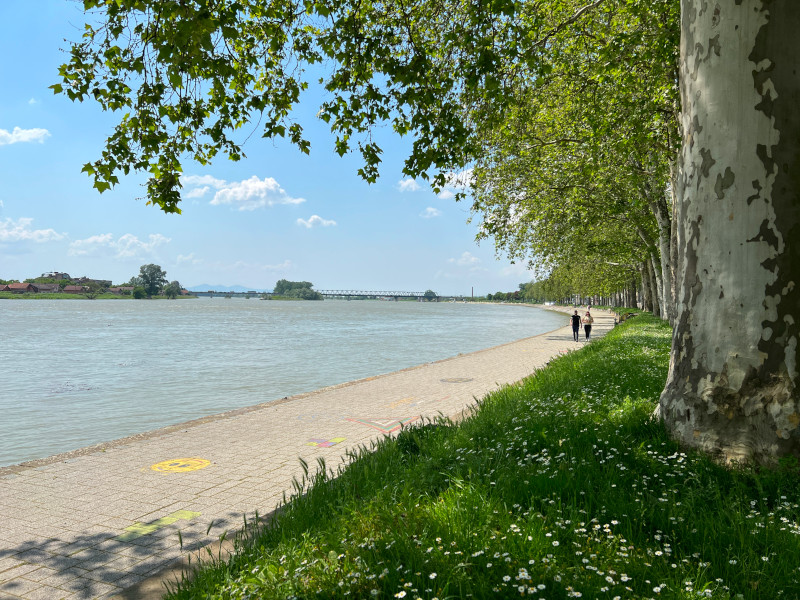
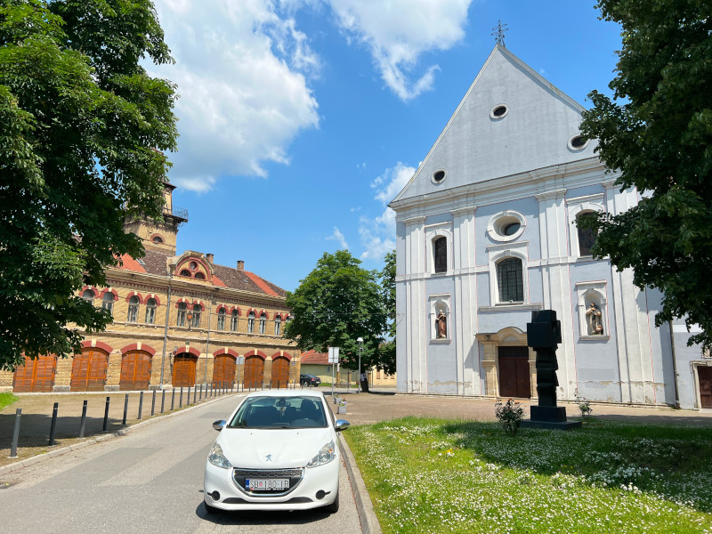

Tvrđava
Tvrđava Slavonski Brod je povijesni utvrđeni kompleks smješten na desnoj obali rijeke Save u Slavonskom Brodu,...
Saznaj više
Korzo
Korzo Slavonski Brod je slikovita šetališna zona u samom središtu grada, prepuna trgovina...
Saznaj više
Industrijski park
Nalazi se u kontaktnoj zoni tvrđave Brod, u Ulici Hanibala Lucića. U parku su....
Saznaj više
Šetalište pokraj Save
Šetalište pokraj Save u Slavonskom Brodu je prekrasno mjesto koje nudi opuštanje i uživanje u prirodi. Smješteno uz obalu rijeke Save,...
Saznaj više
Franjevački samostan
Franjevci djeluju u Slavoniji od 13. st. i najvjerojatnije i u samom gradu Brodu. Stoga oni daju Slavonskom Brodu vjersku,...
Saznaj više